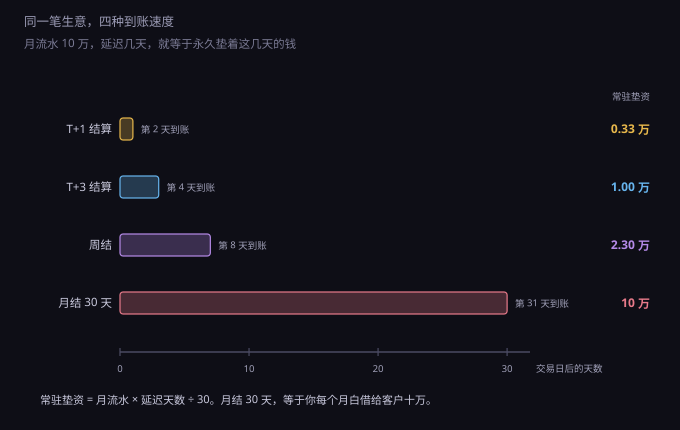
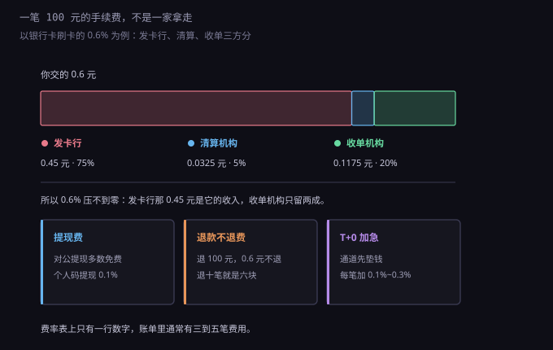
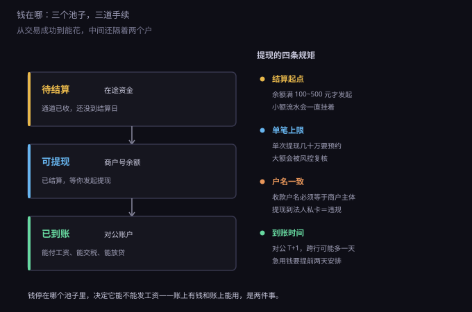

约 0.31 万字 · 3 张图 · 卖出不等于到账，到账不等于能花
新做站的人常犯一个错：把后台的"今日收款"当成"今天的收入"。
实际上同一个数字在三个地方有三个值。 第一个是成交额：用户付了多少。第二个是到账额：扣掉手续费之后进商户号的多少。 第三个是可用额：真正能提到对公账户、能拿去花的多少。
这三个数字之间隔着两道手续：一道是费率，一道是结算。 费率决定"少了多少"，结算决定"晚了多少"。 做生意的人对前者敏感，对后者常常没概念——而后者往往更贵。
结算周期就是"钱在你手里还是在别人手里"的时间差。常见的四种：

T+1，次日结算。微信支付、支付宝的标准模式，也是国内线上生意最常见的一档。 今天卖的钱，明天到商户号；再提现到对公账户，又是一个工作日。
T+3，多见于跨境和部分行业类目。风控高的生意（虚拟商品、预付卡）通道会拉长结算， 因为要留时间处理退款和拒付。
周结，每周固定一天打款。一些聚合支付服务商、SaaS 平台用这种模式， 好处是财务好做账，坏处是你的钱在别人账上平均躺三天半。
月结三十天，常见于平台型生意：你是平台上的商家，平台代收，月底统一结算。 这时候你其实是在给平台做无息贷款，而且往往还要接受"平台有权因售后问题暂扣"的条款。
同一笔十万的月流水，在这四种模式下，你常年被占用的资金分别是三千三、一万、两万三和十万。 差的不是"到账快慢"，是"你有多少本金被锁在别人那里"。
平台代收还要多看一眼条款，里面常埋着三句话。 "售后纠纷期间暂扣"——意味着你的回款时间取决于买家的心情。 "确认收货后 T+7 结算"——电商的实际账期往往在二十天以上。 "平台有权调整结算规则"——这一条意味着你算出来的现金流随时可以被改掉。
怎么衡量这笔被占用的钱？把它当成借来的钱算利息。
假设月流水十万、月结三十天，你等于常年垫着十万在客户那边。 如果为了补这十万去借年化 8% 的信用贷，一年利息八千。 摊到十万月流水上，是 0.8%——比 0.6% 的手续费还高。
这个换算很反直觉：很多人为了把 0.6% 谈到 0.5% 花一周时间， 却对三十天账期毫无反应。可账期才是那笔更大的钱。
同样的算法可以用在任何地方。客户要求 90 天账期？那不是"付款慢"，是在你的报价上加了 2.4% 的隐形费用。 平台说"确认收货后七天结算"？那你的实际资金成本按七天算，约 0.19%。
这也解释了上一章那个悖论：为什么越赚钱越缺钱。 增长的时候，流水涨得比回款快，垫资同步涨——账期越长，增长越像抽血。
再说手续费。很多人以为 0.6% 是通道一家收走了，所以总觉得"这就是他们的利润，能不能免"。
不是。这笔钱到手就分给三方。

以银行卡刷卡的标准类费率为例：一百元交 0.6 元， 其中发卡行拿 0.45 元，清算机构拿 0.0325 元，收单机构剩下 0.1175 元。 也就是说，你在跟通道讨价还价的那部分，只占总额的两成。
线上的第三方支付分润结构不公开，但逻辑一样： 发卡行和清算机构拿走大头，通道赚的是剩下那一小截，靠规模活。
这解释了两件事。第一，为什么 0.6% 压不到零——发卡行那部分不归通道管。 第二，为什么月流水几十万的商户能谈到 0.2%、0.3%：通道让的是自己那两成里的钱， 甚至愿意亏着做，因为它要的是流水和用户。
反过来说，一个新站去找通道谈费率，对方几乎没有让利空间。 与其磨价，不如把精力放在退款率和拒付率上——那两个数字对成本的影响更大。
费率表上只有一行数字，账单里通常有三到五笔。这四笔最容易被漏算。
一，提现费。 对公账户提现多数免费，但个人码提现收 0.1%（超出免费额度后）， 个人经营码有的免费有的按笔收，跨境通道的提现往往还要再收一笔固定费。
二，退款不退费。 用户退了一百块，你退给他一百，但那 0.6 元手续费不退。 这一条在退货率高的生意里影响很大。
三，T+0 加急费。 想让钱当天到，通道先垫给你，代价是每笔加 0.1% 到 0.3%，或者按笔收固定几毛。 十万流水换当天到账，一个月多付一百到三百。
四，汇损。 做跨境的，用户付美元你收人民币，中间有换汇点差，通常 1% 上下。 这笔钱不在费率表里，但它确实从你的收入里出去了。
四笔加起来，一个粗心的账可能把综合成本从 0.6% 算成 1%，差出将近一倍。 所以记账的时候别只用"费率"这一个数，要用"实收 ÷ 应收"倒推——那个才是真实的成本。
上面第二条值得单独算一笔。
假设你做一百单，每单一百元，退货十单。 交的手续费是按一百单算的：100 × 100 × 0.6% = 60 元。 实际成交只有九十单，九千元。
那么真实费率是 60 ÷ 9000 = 0.667%，比标称的 0.6% 高了一成一。 退货率 30% 的话，真实费率是 0.857%，高了四成。
这还是只算手续费。退货还有物流、包装、人工、商品折旧， 以及最要命的一项：这笔钱在退货周期里既不在你手里，也不在客户手里。
所以"退货率"不是一个服务指标，是一个成本指标。 做电商的把退货率从 10% 降到 5%，省下的不只是运费，还有那 0.067% 的费率差和半个月的资金占用。
钱到了商户号，还没完。提现这一步有四条规矩，每一条都卡过人。

结算起点。 不少通道规定商户号余额满一定金额（一百到五百元不等）才发起结算，不到就一直挂着。 小流水的新站，第一周可能一分钱都提不出来。
单笔上限。 单次提现有上限，几十万以上通常要提前预约，大额还会触发风控复核，多等一到三个工作日。 这事在发工资那天特别致命。
户名一致。 收款户名必须等于商户主体名称。公司名义开的商户号，只能提到公司的对公账户。 提到法人私卡？那叫挪用资金，同时也把公司的收入变成了个人的收入——税务上又是一笔。
到账时间。 对公 T+1，跨行可能再多一天。周五提现，周一才到。 所以"周五发工资"这个习惯，在收款链路里是个坑：你得周三就把钱提出来。
把上面这些串起来，你的钱其实分散在三个池子里。
第一个池子是待结算：用户已经付了，通道收了，但还没到结算日。 这笔钱你只能看到，动不了。它的大小等于"日流水 × 结算延迟天数"。
第二个池子是可提现：已经结算到商户号，等你发起提现。 它不计利息，也不受存款保险保护——放在别人账上的钱，安全性取决于对方。
第三个池子是已到账：到了对公账户，这才是能付工资、能交税、能拿去申请贷款的钱。
一个健康的做法是：每天看一眼三个池子的数，尤其看第一个。 当待结算金额连续几天超过月流水的三分之一，说明你的结算周期出了问题， 要么是通道延迟，要么是有订单卡在风控里。
反过来，如果可提现池里长期躺着大笔钱不提，也是一种浪费： 它不生息，还增加了通道出问题时的敞口。 除了留够一周的退款备用金，其余该提就提。
这里有个容易被忽略的法律细节：商户号里的钱不是存款。 它不受存款保险保护，也不适用银行的破产清偿顺序； 万一通道出问题被接管，商户的余额是按普通债权排队的，排在储户和员工工资后面。 所以"把公司现金放在商户号里"这件事，安全性低于放在对公账户，而收益是零。
能，但有门槛，也有时机。
门槛大致在月流水几十万这个量级。低于这个数，通道的客户经理不会为你单独走审批， 你拿到的就是标准价。高于这个量级，可以申请行业优惠费率， 教育、医疗、公益、部分民生类目本身就有更低的指导价。
时机有两个：一是刚上线、能给出增长预期的时候（有些服务商会给新商户前几个月优惠）； 二是流水稳定跑满三个月之后，拿着账单去谈。
谈的时候别只谈百分比。可以换的东西有：结算周期（T+1 改 T+0 不加价）、 提现手续费减免、退款手续费的返还比例、技术支持响应时间。 这些加起来往往比让 0.05 个点更值钱。
还有一个很少人用的办法：多通道分流。 微信、支付宝、聚合支付各接一家，把量分散开， 既能压价，也能在某一家出故障时不至于全站停摆。
把这一节压缩成能照着做的几条。
一，算清三个数：成交额、到账额、可用额，每天对一次，差额要能解释。 二，把结算周期写进现金流表，按到账日排支出，不按成交日。 三，把"待结算 ÷ 月流水"当成一个指标盯住，超过三分之一就查原因。 四，退款率单独统计，用它修正真实费率。 五，提现安排在发工资和交税的前两天，别卡周五。 六，商户号里只留一周的退款备用金，其余提到对公账户。 七，月流水过五十万再谈费率，谈的时候带上结算周期和退款政策一起谈。
这些事都不难，难的是坚持做。但它们决定了同一门生意， 一个人手里始终有现金，另一个人始终在等钱。